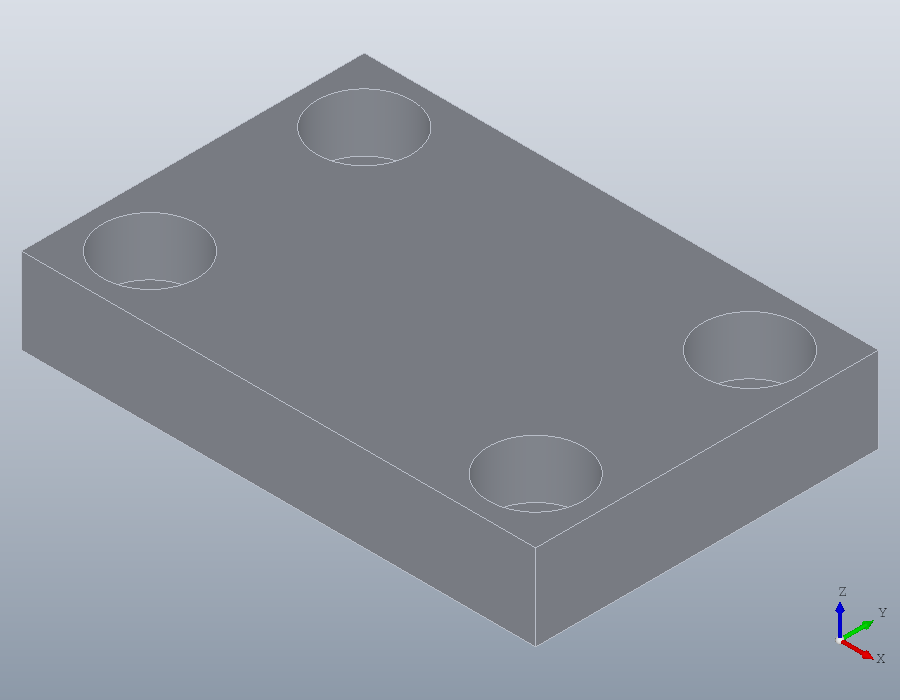
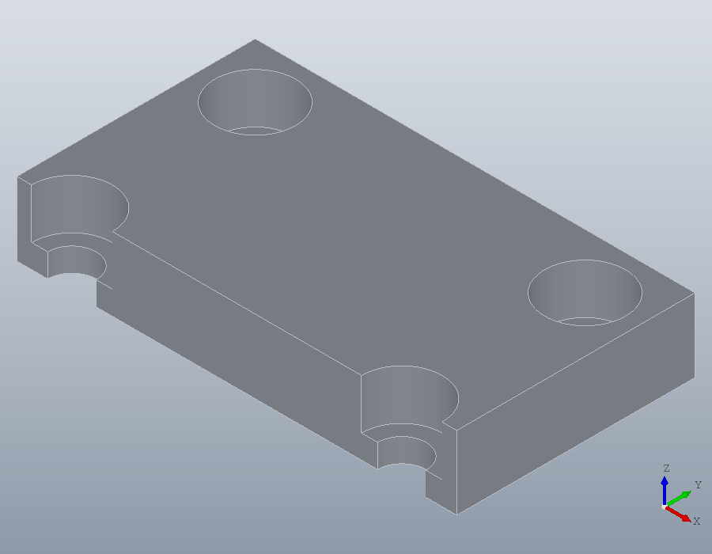
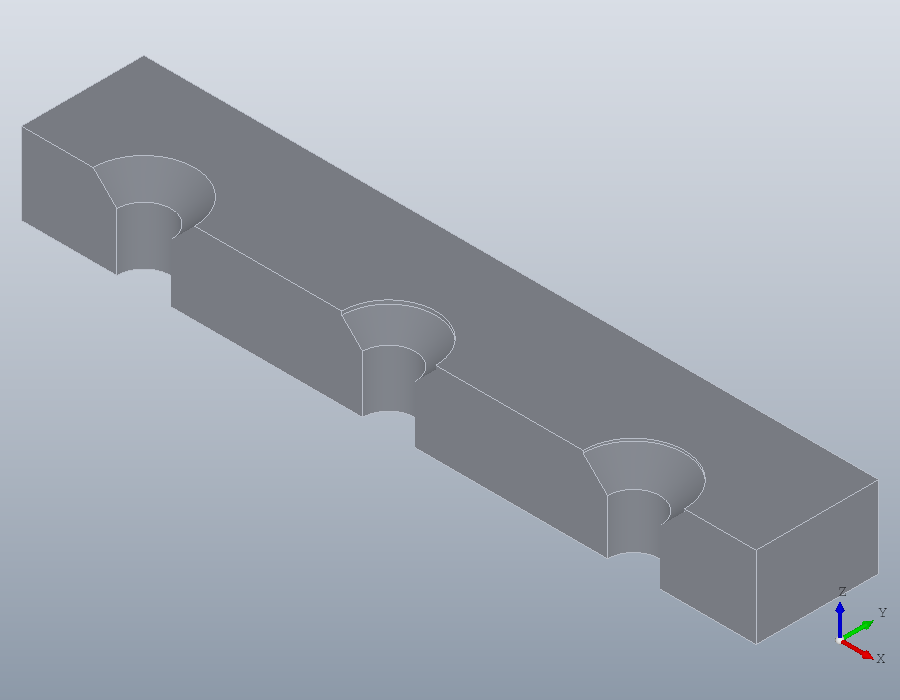

Clearance holes, counterbores and countersinks
A screw that clamps one part to another is tapped into the second and passes through a clearance hole in the first. The tutorial on holes and threads tapped the second part; this one drills the first: the clearance hole, and the counterbore or countersink that sinks the screw's head.
Their sizes come from standards, and solid.holespec gives them before anything is drilled, so that a part can be laid out around them. Where each number comes from is set out on the standards page Clearance holes, counterbores and countersinks.
Reading a hole before drilling it
solid.holespec takes the thread of the screw and the options hole takes. With 'Clearance' the hole is the clearance hole of ISO 273, in its fine, medium or coarse series, and 'Counterbore', true adds the counterbore for a socket head cap screw.
H = solid.holespec ('M6', 'Clearance', 'medium', 'Counterbore', true)H =
scalar structure containing the fields:
name = M6
clearance = medium
drill = 6.6000
counterbore =
11.0000 6.8000
countersink = [](0x0)The hole is 6.6 across, and the counterbore 11 across and 6.8 deep.
A cover held by four cap screws
A cover 60 by 40 and 10 thick is held down by four M6 cap screws. Each counterbore must clear the edges by 2, so the screws stand that far in from the corners, read from the counterbore before it is cut.
e = H.counterbore(1) / 2 + 2
P = [e, e, 10; 60 - e, e, 10; e, 40 - e, 10; 60 - e, 40 - e, 10];
cover = solid.box (60, 40, 10);
cover = hole (cover, P, 'M6', Inf, 'Clearance', 'medium', ...
'Counterbore', true);
show (cover);e = 7.5000
The screw clamps through what the counterbore leaves of the cover, which sets its length together with the depth it is tapped into the base.
grip = 10 - H.counterbore(2)grip = 3.2000Cut in half through two of the screws, the cover shows the counterbores.
half = subtract (cover, solid.box (60, 7.5, 10));
show (half);
On a washer
A cap screw on a plain washer needs a counterbore wider and deeper by the washer: 'Counterbore', 'washer'.
W = solid.holespec ('M6', 'Clearance', 'medium', 'Counterbore', 'washer');
W.counterboreans =
13.0000 8.5000Countersunk screws
A countersink seats a countersunk head. 'Countersink', true is the one for the slotted, cross recessed and hexalobular countersunk screws, whose heads ISO 7721 gives, and 'Countersink', 'socket' the one for hexagon socket countersunk screws, whose heads are larger. Each is given as its diameter at the surface, its angle and the depth of a cylinder above the cone. In the medium series the countersink is a plain cone; in the fine series it sits under a short cylinder, so that the head can sit just below the surface.
A = solid.holespec ('M6', 'Clearance', 'medium', 'Countersink', true);
B = solid.holespec ('M6', 'Clearance', 'fine', 'Countersink', true);
C = solid.holespec ('M6', 'Clearance', 'fine', 'Countersink', 'socket');
[A.countersink; B.countersink; C.countersink]ans =
12.4000 90.0000 0
11.5000 90.0000 0.4500
12.4000 90.0000 0.3000The three side by side in a strip, cut in half along their row.
strip = solid.box (90, 30, 10);
strip = hole (strip, [15, 15, 10], 'M6', Inf, 'Clearance', 'medium', ...
'Countersink', true);
strip = hole (strip, [45, 15, 10], 'M6', Inf, 'Clearance', 'fine', ...
'Countersink', true);
strip = hole (strip, [75, 15, 10], 'M6', Inf, 'Clearance', 'fine', ...
'Countersink', 'socket');
show (subtract (strip, solid.box (90, 15, 10)));
What the standards do not give
A tapped hole has no head to seat, so a counterbore or countersink is refused without 'Clearance'.
hole (cover, [30, 20, 10], 'M6', Inf, 'Counterbore', true);solid.holespec: 'Counterbore' and 'Countersink' apply only to a clearance hole.The counterbores and countersinks are given for the fine and medium series only, and the one for a socket head in the fine series only.
solid.holespec ('M6', 'Clearance', 'coarse', 'Counterbore', true);
solid.holespec ('M6', 'Clearance', 'medium', 'Countersink', 'socket');solid.holespec: IS 3406 gives no counterbore for a coarse clearance hole for M6.
solid.holespec: IS 3406 gives no countersink for a medium clearance hole for M6.Numbers instead
A counterbore or countersink of another size is given by its numbers, which are taken as given. The common case is a deeper counterbore, so that a screw of a standard length reaches the base: 8 deep instead of 6.8 leaves a grip of 2.
deep = solid.holespec ('M6', 'Clearance', 'medium', 'Counterbore', [11, 8]);
deep.counterbore
cover = solid.box (60, 40, 10);
cover = hole (cover, P, 'M6', Inf, 'Clearance', 'medium', ...
'Counterbore', [11, 8]);ans =
11 8Numbers are also how a hole for a screw outside the standards is drilled, from a plain diameter; the standard sizes need the thread named.
plate = hole (solid.box (40, 40, 8), [20, 20, 8], 6.6, Inf, ...
'Countersink', [13, 90, 0.5]);
hole (plate, [20, 20, 8], 6.6, Inf, 'Counterbore', true);solid.Shape.hole: a standard Counterbore or Countersink needs a named thread.